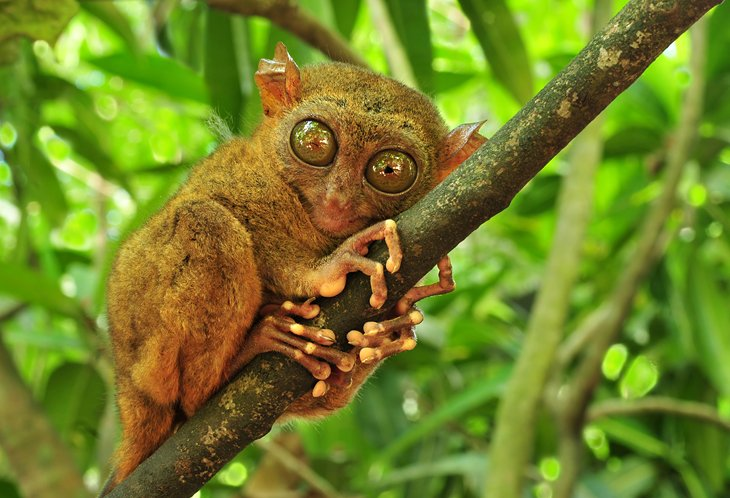
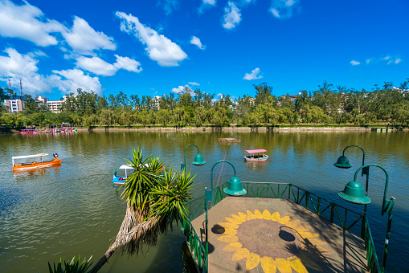
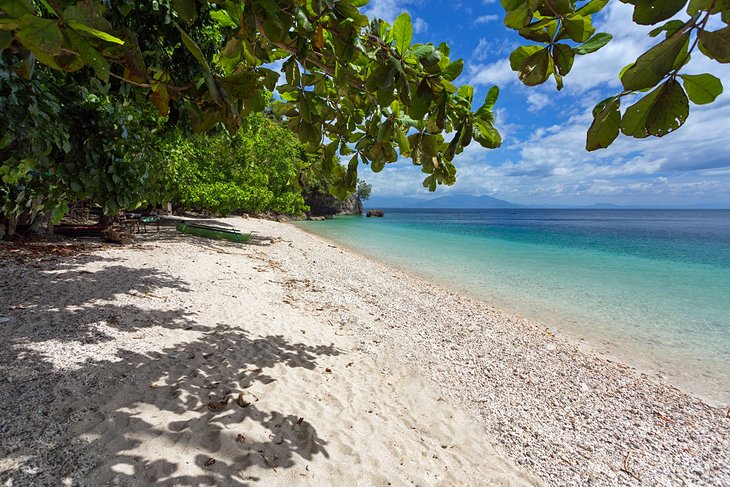
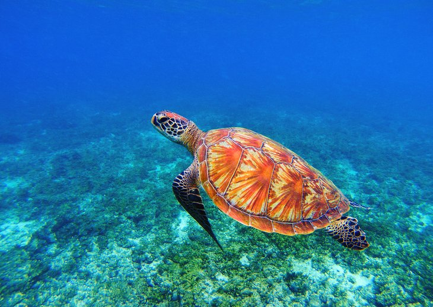
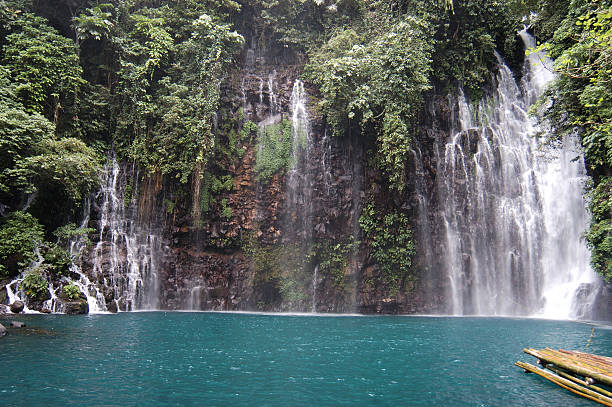

The Best Places to Visit in the Philippines
Dec 9, 2021
Because of its over 7,000 islands, the Philippines is a place that
will never get you bored.
Each region of the Philippines has a different landscape, ranging from mountainous and
tropical to urban. You may spend a day strolling through Intramuros in Manila or
riding a kayak in the burnham park of baguio. Hiking in
the steep, cold mountains is an experience not to be missed.
Read our list of the best places in the Philippines and discover where you want to travel to.
1.Boracay

There is a reason that Boracay Island is considered the beach capital of the Philippines because there are more than 12 beaches.
Boracay has beautiful beaches, some of the best hotels in the Philippines, excellent water activities, and a wide range of dining options. It is a full-service resort island. Boracay offers a variety of day trips and activities for both families and groups of friends.
2.Bohol

The island of Bohol is a destination that highlights the country's natural beauty. The Chocolate Hills in Carmen are one of the island's most unusual natural wonders.
Tarsier primate, known for its large, engaging eyes, can be found on the island of Bohol. You can take an intimate walk through the grounds and stand inches away from the tarsiers for a fee. The beach is the highlight of Bohol.
3.Banaue

Banaue's rice terraces are one of the most beatiful sights in the Philippines. In this region, the green terraces are an agricultural beauty.
. Take a stroll through the Banaue Ethnic Village or the Hiwang Village to meet the indigenous people who farm the rice terraces for a more in-depth understanding of the region.v
4.Cebu

The island of Cebu, located in the central Visayas region, is known for having some of the best diving and snorkeling in the Philippines. While Cebu's main attraction is its water, the city itself is a tourist destination with museums and cathedrals that will appeal to history nerds.
5.Manila

The capital of the Philippines, Manila, is a very busy city with non-stop activity. they have these local jeepneys which is the main form of transportation, and historical sights that are a good sight to look at.
6.Vigan

Vigan, in the northern Philippines, is one of the most charming towns to visit in the Luzon region. Take a ride through the streets in a kalesa and admire the historical architecture.
Vigan is a city with many places to discover. A visit to the St. Paul Metropolitan Cathedral is breathtaking, and it's a great place to sit and people-watch while learning about the local culture.
7.Sagada

Sagada offers one of the most unique experiences in the Philippines. The steep mountains and high elevation add to the excitement for outdoor adventure.
Hiking is popular in Sagada, especially to Mount Ampaco, the region's highest peak, or through Echo Valley, which has steep and rugged terrain.
8.Davao

Davao City is the main city in the southern Philippine region of Mindanao. Davao City features many natural elements, including the Eden Nature Park, Philippine Eagle Center, and the Davao Baywalk near the sea.
One of the best places to visit in Davao City is Mount Apo, the highest mountain in the Philippines.
9.Baguio

Baguio is a city on the island of Luzon that is hidden away in a mountainous region. You can go hiking or biking on one of the many trails, or sample their delectable fresh strawberries
Baguio is distinct from other destinations in the Philippines, it is surrounded by trees rather than water. Parks like Mines View and Burnham allow you to enjoy some of the region's unique vibe and area.
10.Coron

Coron Island is a tropical paradise with blue and green water that appears surreal. The mountainous island is located at the southernmost tip of the Palawan island chain. Because of the numerous wrecks on the island, diving is popular.
Many of the preserved shipwrecks are in depths ranging from three meters in shallow water to 42 meters in deep water. Because of their size, some of the wrecks require more than one dive to explore, but you can easily spend a week diving in this area.
11.Puerto Princesa

Palawan Island's rock islands, caves, and natural parks are the Philippines' hidden paradise.
Honda Bay, which is popular for snorkeling, and Ugong Rock, where you can try ziplining and caving, are two other must-see attractions in Puerto Princesa.
12.Samal

Hiking, diving, and kayaking are popular activities on Samal Island. Aside from relaxing on the beach, one of the best things to do on Samal Island is to visit the Monfort Bat Sanctuary, which is home to millions of bats in the caves.
Samal Island is only a short distance from Davao City, so it's a great change of pace if you're looking for a more urban vive or a wider range of dining options.
13.Siargao

Siargao Island should be on the route of anyone who enjoys having their own journey. The small island is loaded with good sights, from large waves to unusual rock formations and breathtaking waterfalls.
When visiting Siargao, you can also go island hopping to places like Bucas Grande, where you can see the Sohoton Caves and non-sting jellyfish.
14.Apo Island

If swimming with sea turtles sounds like a good feeling, head to Apo Island in the Philippines. Because of the protected marine sanctuary, this location is ideal for swimming with turtles and other sea life.
The island is a paradise. tourist's The protected landscape is among the most elegent in the PH. Take a stroll through Apo Village on the Lagoon Trail to see and interact with those who live on the island to get a sense of life on the island for the locals.
15.Iligan

Iligan the “City of Majestic Waterfalls” deserves a spot on your bucketlist if you’re a lover of waterfalls. This city in Northern Mindanao is home to many of the Philippines’ most beautiful waterfalls.
It is best known for the large number of waterfalls concentrated in the area, and is aptly called the City of Majestic Waterfalls. Aside from its many scenic Philippine waterfalls, the city of Iligan is blessed with natural attractions such as crystal clear springs and freshwater lakes.
References:
https://guidetothephilippines.ph/|| https://unsplash.com/|| https://www.planetware.com/|| https://www.detourista.com/||